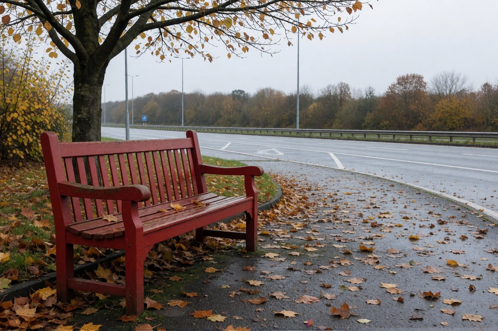

Cronaca · 26 novembre 2026
Uccisa a ventiquattro anni a Ponte Buggianese, il giorno dopo il 25 novembre

Ionela Miruna Garneata è stata trovata morta in casa, nel Pistoiese. Il compagno, venticinque anni, ha percorso settanta chilometri e si è gettato dallo stesso cavalcavia dell'A1 dove a settembre fu uccisa Lorena Isceri.
di Franco Zanghì
Una ragazza di ventiquattro anni è stata uccisa in casa, il giorno dopo la Giornata internazionale contro la violenza sulle donne. È successo a Ponte Buggianese, in provincia di Pistoia, e la notizia è arrivata la mattina di giovedì 26 novembre 2026.
La vittima è Ionela Miruna Garneata, ventiquattro anni. È stata trovata morta nell'appartamento di via Roma dove viveva con il compagno, un uomo di venticinque anni, in una palazzina dove abitano anche familiari di lui, in appartamenti distinti.
L'allarme è arrivato al numero unico di emergenza intorno alle 8:30. Chi abbia chiamato, al momento, non è chiaro: gli investigatori stanno riascoltando le registrazioni.
Quello che gli investigatori hanno trovato
Nell'appartamento, secondo Il Tirreno, ci sono segni riconducibili a una colluttazione e numerose tracce di sangue. La donna sarebbe stata colpita con un oggetto contundente, che però non è stato ancora individuato. La causa della morte non è accertata.
Sul posto sono arrivate le forze dell'ordine e la polizia scientifica. Alcuni fucili regolarmente detenuti dalla famiglia sono stati sequestrati a scopo precauzionale, e al momento non risultano collegati all'omicidio.
Settanta chilometri fino al cavalcavia
Alcuni residenti avrebbero visto l'auto dell'uomo davanti all'abitazione poco prima, e poi allontanarsi verso l'autostrada. Secondo la ricostruzione al vaglio delle forze dell'ordine, il compagno ha percorso circa settanta chilometri fino al cavalcavia Lora, nel territorio di Barberino di Mugello, in provincia di Firenze. Avrebbe dato fuoco alla propria auto e poi si è gettato dal ponte che sovrasta l'autostrada.
Il tratto dell'A1 in direzione nord, fra il bivio con la Direttissima e Aglio, è rimasto chiuso per diverse ore, per i soccorsi e per i rilievi.
È lo stesso cavalcavia dal quale, il 3 settembre 2026, fu uccisa Lorena Isceri, gettata nel vuoto dal compagno, che poi si è tolto la vita allo stesso modo. Secondo le cronache dei giorni scorsi, Autostrade per l'Italia aveva dedicato a lei due panchine rosse nelle aree di servizio vicine, e mercoledì 25 novembre era nata l'associazione che porta il suo nome, voluta dalla madre.
Il presidente della Regione Toscana, Eugenio Giani, ha scritto sui social che secondo le prime ricostruzioni si tratta di un femminicidio in ambito familiare, e ha richiamato la data: il giorno dopo il 25 novembre.
Come la vedo io
Le panchine rosse servono, perché la memoria serve. Ma la memoria arriva dopo, quando non c'è più nessuno da salvare.
Bisogna arrivare prima: nelle scuole, nelle famiglie, e negli uffici dove si raccolgono le richieste di aiuto, che vanno prese sul serio la prima volta e non la terza. E chi ha paura, anche solo per un sospetto, non deve restare sola.
Il 1522, numero antiviolenza e stalking, è gratuito e risponde ventiquattro ore al giorno, tutti i giorni dell'anno.
Fonti
- Il Tirreno, «Ponte Buggianese, 24enne uccisa in casa: fugge per 70 chilometri e si lancia nel vuoto dallo stesso viadotto di Lorena Isceri», 26 novembre 2026
- ANSA, 26 novembre 2026
- Sky TG24, «Femminicidio a Pistoia, uccide la fidanzata e si suicida lanciandosi da viadotto autostrada», 26 novembre 2026
- Today, «Uccide la compagna a Ponte Buggianese poi si getta dal viadotto a Barberino del Mugello», 26 novembre 2026
- la Repubblica Firenze e La Nazione, per le panchine rosse e l'associazione dedicata a Lorena Isceri, 24 e 25 novembre 2026
La dinamica è la ricostruzione degli investigatori nelle prime ore e può cambiare: la causa della morte non è accertata e l'arma non è stata trovata. Il nome dell'uomo è stato pubblicato dalle testate toscane e qui non viene riportato, perché non c'è e non ci sarà un accertamento giudiziario a suo carico. Le panchine rosse dedicate a Lorena Isceri e l'associazione nata il 25 novembre sono riferite alle cronache dei giorni scorsi e non risultano dalle pagine consultate oggi, come non risulta l'età della donna uccisa a settembre. Non è indicata nelle fonti la procura competente per l'indagine.